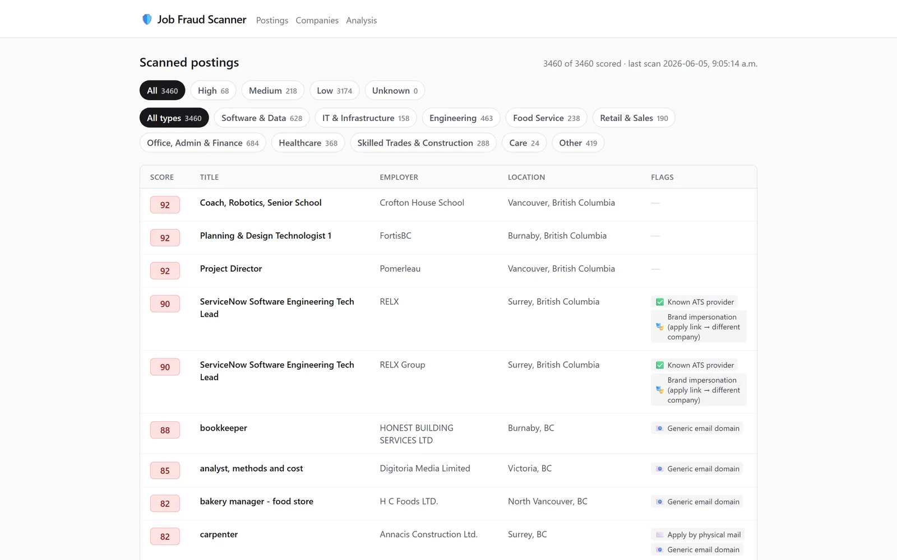
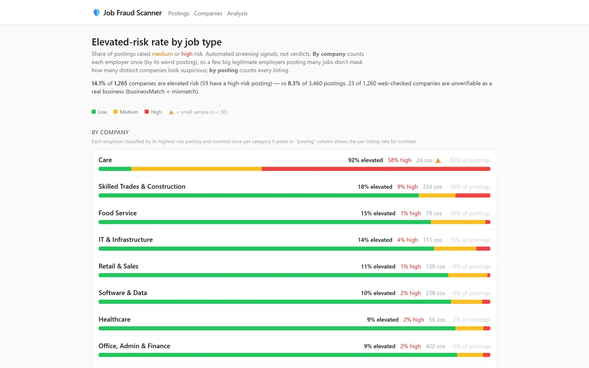

Scanner · LLM · Audit
Job Fraud Scanner
Which BC tech job postings are a genuine local hire — and which exist for other reasons?

01 Problem
WorkBC is British Columbia's public job board, but not every “software” posting is a real local opening. Some are credential-harvesting fronts, brand impersonations that route applicants to a host that isn't the named employer, or ghost ads that exist for reasons other than hiring. I wanted an honest, evidence-backed read on how many tech postings actually look like a genuine attempt to hire locally — not a vibe, but a score I could defend.
02 Approach
A scraper pulls the tech postings; each one is scored by an LLM judge (Claude Haiku) against explicit fraud signals rather than gut feel: generic email domains, an apply-host that differs from the stated employer (brand impersonation), businesses that can't be verified, and NOC job-type mismatches.
Crucially, every verdict keeps a web-search audit trail at an unlinked /audit/<token> URL, so any score can be inspected after the fact — the judge has to show its work. An /analysis page rolls the whole corpus up into elevated-risk rates by job type, counting companies once (by their worst posting) so a few large legitimate employers don't mask how many distinct companies look suspicious.

03 Tech stack
Frontend
Backend
Infrastructure
04 Outcome
3,460
software & tech postings scored across the corpus
8.3%
of postings flagged elevated-risk — 14.1% of companies
The full WorkBC tech corpus is scored and continuously refreshed, and every score is auditable — the point was never to accuse, but to make the signal inspectable. The framing throughout is “automated screening signals, not verdicts.”